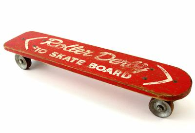

Het skateboarden werd in de jaren 50 bedacht door surfers die hun surfvaardigheden ook op het land wilden uitproberen,
ze monteerden wielen onder hun surfplank.
in de de vroege jaren 50 gerbuikten ze kortere surfplanken waaronder wielen van metaal waren gemonteerd. In 1950 werd een nieuw soort skateboard ontwikkeld door roller derby
het maaktte het skaten wat makkelijker waardoor er ook nieuwe tricks werden ontdekt.
Na het eerste skateboard veranderde alles. De skateboards verbeterden er werden nieuwe tricks uitgevonden.
In 1963 werd de eerste skate contest gehouden in Hermosa Beach, Californië waar de skaters hun vaardigheden konden tonen.
er werden sinds dan ook teams samen gesteld die werden gesponserd.